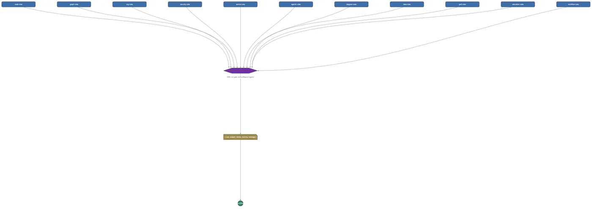

Métaprogrammation et règles de code
Une seule porte d'intégration sur une dizaine de domaines, une unification qu'aucun pair n'a ; en retard sur l'écriture déclarative des règles.
1 Strong · 7 Solid · 4 Partial · 0 Emerging
Mesuré contre : semgrep · OPA · Dossiers : base/meta(s'ouvre dans un nouvel onglet) · base/reflect(s'ouvre dans un nouvel onglet) · base/refine(s'ouvre dans un nouvel onglet) · base/governance(s'ouvre dans un nouvel onglet) · Le guide des fonctions de ce domaine

Repensé depuis les premiers principes
Ce que Softanza a gardé de ce qui marche, et ce qu'elle a repensé, tel que la bibliothèque l'a écrit dans ses documents de conception et ses narrations.
La manière SoftanzaUne règle maison n'est ni du folklore ni un motif de texte : c'est un objet vérifié sur un modèle du code, que tout programmeur, humain ou machine, peut exécuter.
Gardé des meilleures pratiques
- Chaque constat porte une gravité : les erreurs bloquent le build, les avertissements conseillent seulement. Les anciens vérificateurs gardent leur format derrière de fins adaptateurs : rien ne casse en aval. source(s'ouvre dans un nouvel onglet)
- Tout ne va pas dans un graphe. Une règle de nommage comme no-aggressive-verbs reste un contrôle textuel ; le but est de ne plus prendre un balayage pour un modèle. source(s'ouvre dans un nouvel onglet)
- Les règles qui changent le comportement arrivent en douceur : activables par domaine, d'abord en simple validation, avec une période de migration pour le code existant. source(s'ouvre dans un nouvel onglet)
Repensé
- Les règles portent sur un graphe du code, pas sur les lignes. Le graphe distingue définition et appel, et voit deux méthodes qui ne diffèrent que par la casse. source(s'ouvre dans un nouvel onglet)
- Les garde-fous deviennent des portes, pas des audits. Une règle de contrainte refuse un câblage interdit dès sa création : donner un pouvoir d'agir à un modèle de langage est rejeté. source(s'ouvre dans un nouvel onglet)
- Un seul moteur de règles couvre code, agents, sécurité, processus métier et organigrammes : une forme de constat, une porte. Budgets de performance et constats de données y passent aussi. source(s'ouvre dans un nouvel onglet)
- Des milliers de lignes de test annoncent la sortie promise. Un banc les exécute et compare, et il est lui-même éprouvé sur des promesses volontairement fausses. source(s'ouvre dans un nouvel onglet)
The distinctive thing here is unification, not any single tool: one CI gate (stzRuleReport) collects findings in one shape from ~11 domains -- code rules, agent-graph invariants, security reachability, org charts, service contracts, workflow SLAs, even diagram notations -- something neither semgrep (code-only) nor OPA (policy-only) attempts. The honest gaps are extensibility (no way to author a custom rule pattern), a two-grammar tree-sitter, and shallow reflection.
Ce qu'un maker en fait, et ce qui se distingue
- One CI gate, one finding shape, across ~11 domains -- a genuine category-of-one
- Code rules born from the library's own hard-won bugs, so it lints itself
- A three-language code graph (Haro, Python, JS) that self-checks via CheckRules()
- A signable, sha256-sealed rule constitution -- governance of the rules
Ce qui est dû
- Declarative rule and policy authoring (semgrep-style patterns, Rego-style expressions)
- Broaden tree-sitter and put Haro on it
- Richer reflection; resolved call edges and dataflow; full dominator analysis for effects-guarded
- Production-harden the semantic resolver; a policy expression language
La manière Softanza, exécutée
Ce que Softanza fait autrement dans ce domaine, montré par du code tiré de ses narrations et de ses gardes, et exécuté pour cette page.
La règle lit les arêtes d'appel : un vrai appel est signalé, une méthode simplement nommée substr ne l'est pas.
aF = StzCheckCode("class Foo" + nl + "def Bar()" + nl + " x = substr(s, 2)" + nl)
nF = len(aF)
for i = 1 to nF
? aF[i][:rule] + " @line " + aF[i][:line] + " [" + aF[i][:severity] + "]"
next
? "findings: " + len(StzCheckCode("class Foo" + nl + "def substr(x)" + nl + " return x" + nl))engine-first @line 3 [warning] findings: 0
exécuté le 2026-10-01 21:18 dans la bibliothèque au commit 0e72e2e2c ; tiré de base/doc/narrations/stz-rules-as-graph-rules-narration.md(s'ouvre dans un nouvel onglet)
Donner le pouvoir d'agir à un acteur de type modèle de langage est refusé dès la construction, pas seulement signalé après coup.
oAG = new stzAgentGraph("mailer")
oAG.AddLLMActor("writer")
try
oAG.Grant("writer", "effectful")
catch
? cCatchError
doneREFUSED: granting 'effectful' to llm actor 'writer' -- an LLM proposes, only a pi-gate commits (no-llm-effectful, enforced at CONSTRUCTION, not merely audited).
exécuté le 2026-10-01 21:18 dans la bibliothèque au commit 0e72e2e2c ; tiré de base/doc/narrations/stz-rules-as-graph-rules-narration.md(s'ouvre dans un nouvel onglet)
Un acteur isolé qui ne détient aucun effet est tout de même repéré : le graphe trouve un chemin vers un effet à travers un outil.
oSG = new stzSecurityGraph("resto")
oSG.AddActor("llm", "sandboxed")
oSG.AddTool("shell")
oSG.Uses("llm", "shell")
oSG.Grants("shell", "effectful")
? "llm holds effectful directly? no. reaches it by a path? " + oSG.ReachesEffectful("llm")llm holds effectful directly? no. reaches it by a path? 1
exécuté le 2026-10-01 21:18 dans la bibliothèque au commit 0e72e2e2c ; tiré de base/doc/narrations/stz-rules-as-graph-rules-narration.md(s'ouvre dans un nouvel onglet)
Les couloirs, un par un
Les couloirs et leurs notes sont cités tels qu'ils ont été lus à la source, le Read from the source on 2026-09-16, from a read-only main worktree.